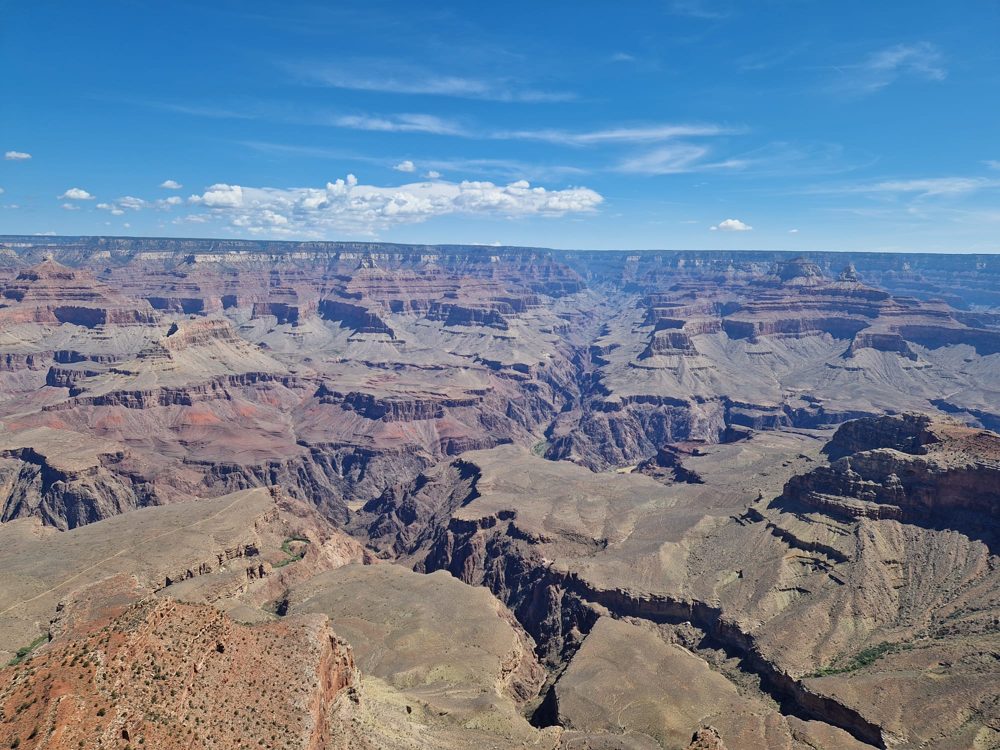
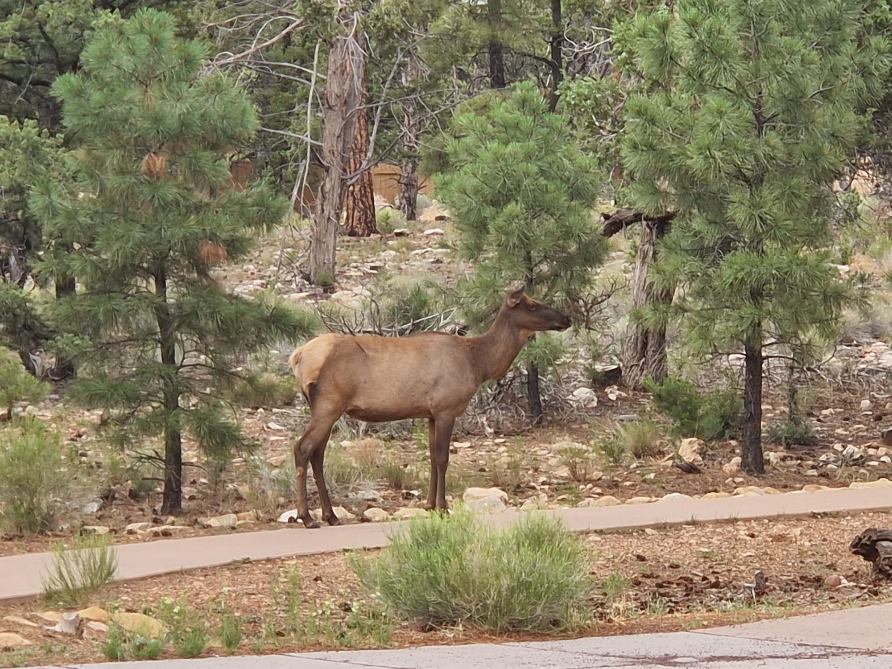
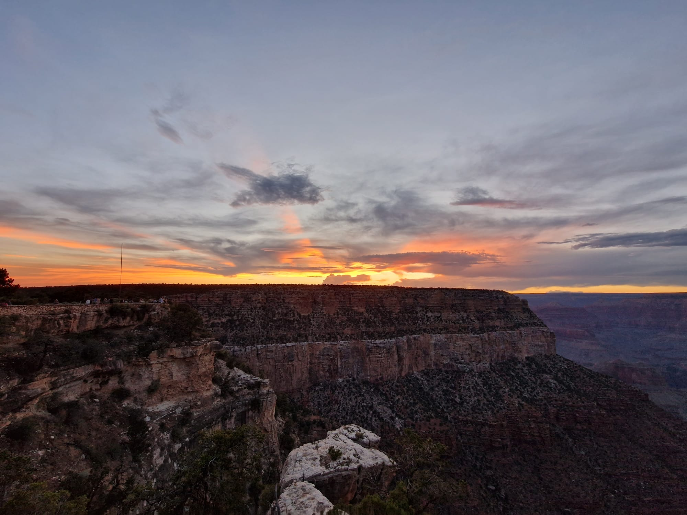

Grand Canyon
Die Fahrt zum Grand Canyon dauerte zum Glück mit ca 2.5 Stunden nicht allzu lange. Bis zum Eingang des Grand Canyon Nationalpark fuhren wir lediglich durch Wüste und Gebirge. Der Nationalpark selbst bot eher eine Waldähnliche Landschaft, durch welche die Strasse führte. Bereits kurz nachdem wir in den Nationalpark hineingefahren waren, kamen wir zum ersten Aussichtspunkt, welcher uns einen Ausblick über den Grand Canyon bot. Obwohl wir beide bereits zuvor einmal am Grand Canyon waren, konnten wir uns nicht mehr daran erinnern, wie gross dieser tatsächlich ist. Auf unerem Weg zur Yavapai Lodge, wo wir dann für die nächsten beiden Nächte logierten, hielten wir noch an weiteren Aussichtspunkten an, um den Grand Canyon zu bestaunen. Nachdem wir unser Zimmer in der Lodge bezogen hatten, wurden wir durch einen kurzen, jedoch heftigen Regenfall überrascht. Danach erkundeten wir noch etwas die Gegend bevor wir dann einmal mehr ins Bett fielen. Am nächsten Morgen wurden wir bereits durch Sonnenschein geweckt. Nach einem erneut eher bescheidenen Frühstück (wir fragen uns echt langsam, was die Amerikaner jeden Morgen essen?!) fuhren wir mit dem Bus zum Visitor Center. Von dort aus starteten wir unseren "Spaziergang" (Wanderung kann man dies bei den super ausgebauten Wegen wohl kaum nennen) dem Rim-Trail entland bis hin zum Village. Obwohl die zurückgelegte Strecke gerade einmal 4 km lang war, hatten wir doch ziemlich lange für den Spaziergang. Natürlich war der Grund dafür die vielen Stopps, welche wir zum Bestaunen und Fotografieren einlegen mussten. Nach einer kleinen Stärkung beschlossen wir vom Village zurück zur Yavapai Lodge zu laufen. Ursprünglich hatten wir geplant mit dem Bus zurückzufahren, doch da wir unser tägliches Schrittziel von mittlerweilen 10'900 Schritten (für uns Bürogummis ist das eine hohe Schrittzahl🤪🙈) noch nicht erreicht hatten, blieb uns ja nichts anderes übrig als zu Fuss zu gehen😉  Gerade zum richtigen Zeitpunkt kamen wir in der Lodge an, denn kurz daurauf erfolgte erneut ein kurzer heftiger Regenschauer. Nach einer frischen Dusche (ach ja, wie die Amerikaner mit sooo weniger Wasser klar kommen ist ein weiteres Rätsel, denn Mimi benötigt mit ihren Haaren eine halbe Ewigkeit) suchten wir erneut nach einer Möglichkeit etwas halbwegs anständiges zum Essen zu finden. (Nach diesen Ferien werden wir wohl eine Zeit lang nur noch Gemüse essen🙈) Gerade als wir uns im Aussenbereich des Restaurants hinsetzten, spazierten auf der anderen Strassenseite ein paar Elche vorbei. Mimi war total aus dem Häusschen, denn dies war für sie die erste Elchsichtung in freier Wildbahn. Remo hingegen blieb ganz "cool", denn er hatte scho viele Elche in seiner Kindheit in Kanada gesehen.  Nachdem wir nun unser Schrittziel um ein paar 1000 Schritte überboten haben, genossen wir noch einen gemütlichen Abend mit einem Sonnenuntergang am Grand Canyon. 